A full, illustrated account of what we built, how we built it, and why each decision was made — with the exact files, the key lines of code, real screenshots of every flow, a combined summary, an interview speech, and five interview Q&A.
Stack: Next.js 15.5 (App Router) · React 19 · TypeScript (strict) · Tailwind v4 · Auth.js v5 (credentials + JWT) · nuqs · Zustand v5. To make a PDF: open this file in a browser and Print → Save as PDF.
Assignment 2.2 made CareerHub fast (caching, streaming, server actions). Assignment 2.3 makes it secure and stateful — but only where security and state actually belong. There are two kinds of user, and they have different capabilities, not just different views:
| Role | Account (password password123) | Can do | Lands on |
|---|---|---|---|
| employer | employer1, employer2 | Manage listings, close jobs | /dashboard/listings |
| candidate | alice, bob | Browse & apply for jobs | /jobs |
We delivered five things on top of 2.2:
/dashboard by role before any page renders.nuqs — shareable, bookmarkable, refresh-proof.Zustand store.tsc --noEmit = 0 errors; next build clean; Middleware bundle emitted.What: a credentials provider validating four hardcoded users, JWT sessions, and the
role typed onto Session, User and JWT.
How — the four mock users are the single source of truth:
export const USERS = [
{ id: "1", username: "employer1", password: "password123", name: "Employer One", role: "employer" },
{ id: "3", username: "alice", password: "password123", name: "Alice", role: "candidate" },
/* …employer2, bob… */
] as const;How — authorize returns the identity, never throws:
authorize: (credentials) => {
const user = USERS.find((u) => u.username === String(credentials?.username ?? ""));
// strict equality — this is a mock, no bcrypt. null on ANY mismatch.
if (!user || user.password !== credentials?.password) return null;
return { id: user.id, name: user.name, role: user.role };
}null, not throw? A thrown error surfaces as an HTTP 500 — a
crash. Returning null is how Auth.js signals "bad credentials" cleanly, which becomes the
red error panel on the login page instead of a stack trace.How — the role relay (the heart of Part 2):
callbacks: {
jwt({ token, user }) { if (user) token.role = user.role; return token; }, // ② sign-in
session({ session, token }) { session.user.role = token.role; return session; } // ③ expose
}{ id, name, role }token.role = user.role (persisted in the signed cookie)session.user.role = token.role (visible to every auth())And the type augmentation so session.user.role is strongly typed (a typo won't compile):
declare module "next-auth" { interface Session { user: { role: Role } & DefaultSession["user"] } }
declare module "@auth/core/jwt" { interface JWT { role: Role } } // see §8 for why this exact moduleWhat: a Server Component form whose inline Server Action signs the user in and redirects them by role.
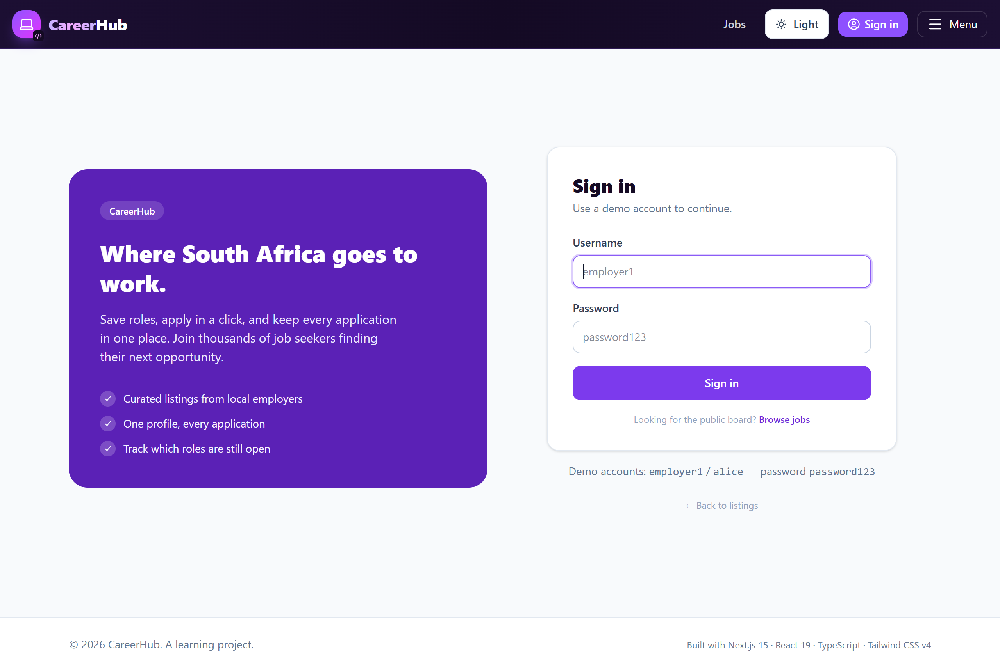
username (not email), as required.signIn() runs before the session cookie
exists, so you cannot read the role from the session to decide where to send the user. Our fix:
the role is derivable from the username — the same data authorize uses — so we pick
the destination first and pass it as redirectTo.async function authenticate(formData) {
"use server";
const username = String(formData.get("username") ?? "");
const redirectTo = roleForUsername(username) === "employer" ? "/dashboard/listings" : "/jobs";
try { await signIn("credentials", { username, password, redirectTo }); }
catch (err) {
if (err instanceof AuthError) redirect("/login?error=CredentialsSignin"); // bad creds
throw err; // NOT an AuthError → it's the success NEXT_REDIRECT; let it through
}
}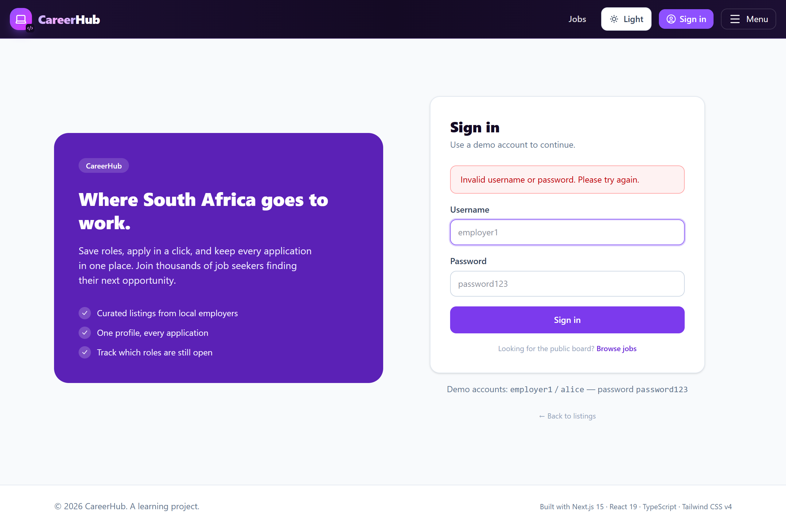
AuthError and redirects to ?error=CredentialsSignin; the page renders the red panel — no crash.What: protect /dashboard/* by role, and bounce already-signed-in users off
/login — all before a page renders.
export default auth((req) => {
const role = req.auth?.user?.role, path = req.nextUrl.pathname;
if (path.startsWith("/dashboard")) {
if (!req.auth) return NextResponse.redirect(new URL("/login", req.nextUrl)); // who are you?
if (role !== "employer") return NextResponse.redirect(new URL("/jobs", req.nextUrl)); // not yours
}
if (path === "/login" && req.auth)
return NextResponse.redirect(new URL(role === "employer" ? "/dashboard/listings" : "/jobs", req.nextUrl));
return NextResponse.next(); // /jobs and /jobs/[id] fall through — public
});
export const config = { matcher: ["/((?!_next/static|_next/image|favicon.ico|api/auth).*)"] };/login.
A signed-in candidate is an authorization failure — "we know you, this isn't yours" —
sending them to /login would be absurd and would loop, so they go to /jobs.
Same mechanism, opposite cause.Verified live: an unauthenticated request to /dashboard/listings returns
307 → /login. The build emits a Middleware bundle (87.5 kB).
The root layout became async and reads the session once, then passes it to the nav.
export default async function RootLayout({ children }) {
const session = await auth(); // only decodes the signed cookie — no DB call
return <Navbar session={session} /> /* …rest of tree… */;
}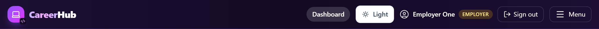
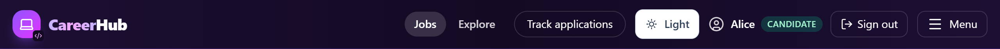
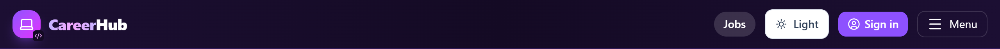
Sign Out is a Server Action — signOut({ redirectTo: "/" }):
"use server";
export async function signOutAction() { await signOut({ redirectTo: "/" }); }/jobs/[id] is public (employers may view a posting), so the gate is about
which part renders — a page concern. We fetch the job and the session in parallel:
const [res, session] = await Promise.all([fetch(jobUrl, { next: { tags: ["jobs"] } }), auth()]);
// employer → message · signed-out → form + note · candidate → form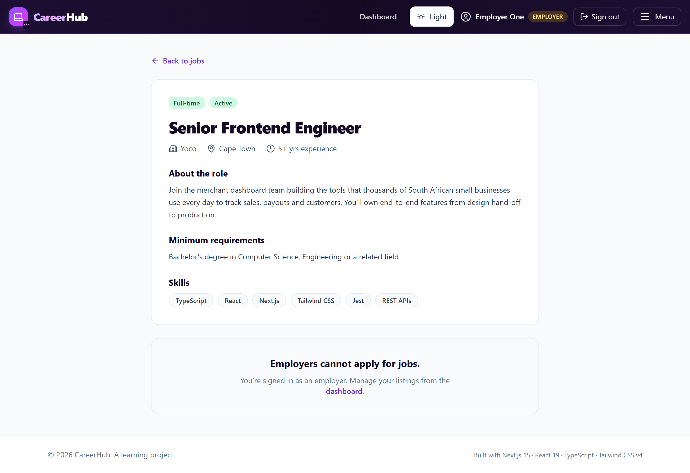
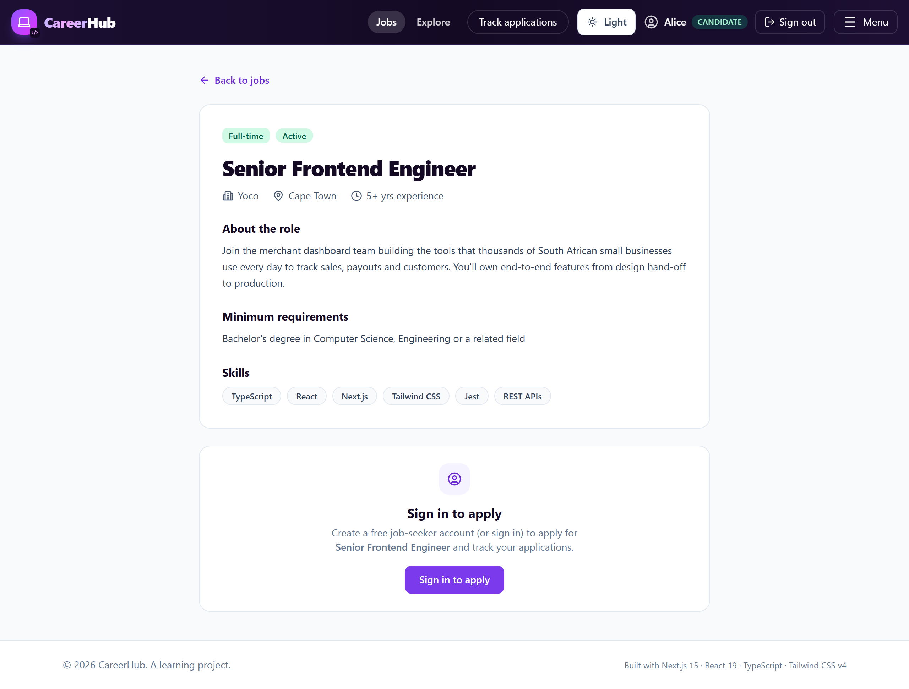
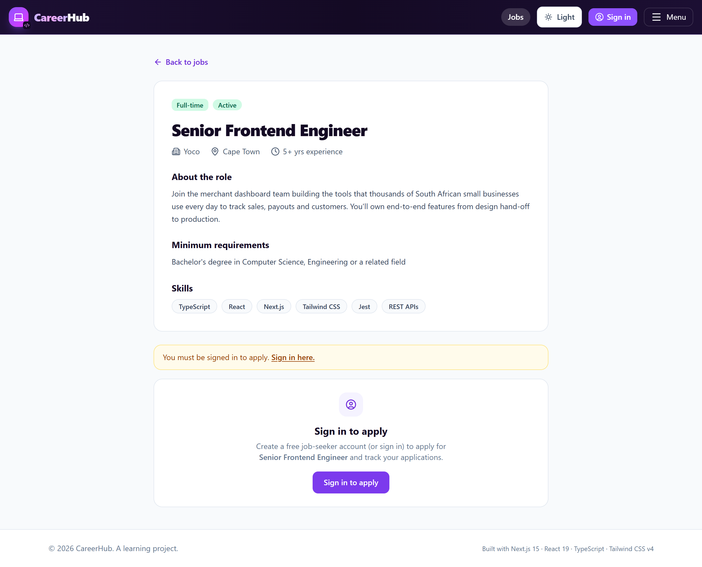
Promise.all? The job fetch and the session read don't depend on each
other, so running them together means the auth check adds zero latency to the page.What: keyword, location and status filters that live in the URL. How: one
useQueryStates call, debounced text inputs, and server-side filtering.
const [filters, setFilters] = useQueryStates({
q: parseAsString.withDefault(""),
location: parseAsString.withDefault(""),
status: parseAsStringLiteral(["open","all"]).withDefault("all"),
}, { shallow: false }); // shallow:false = real navigation → the Server Component re-filters
// debounce: local state now, push to the URL 300ms after typing stops
setQInput(value);
clearTimeout(qTimer.current);
qTimer.current = setTimeout(() => setFilters({ q: value || null }), 300);The server page reads the same values back and filters after the cached fetch:
async function getJobs({ q, location, status }) {
const res = await fetch(url, { cache: "force-cache", next: { tags: ["jobs"] } }); // still tagged!
let jobs = (await res.json()).data.map(toSummaryView);
if (q) jobs = jobs.filter(j => j.title.toLowerCase().includes(q.toLowerCase()) || …);
if (status === "open") jobs = jobs.filter(j => j.status !== "Closed");
return jobs; // cache stores the FULL list; we filter in JS after retrieval
}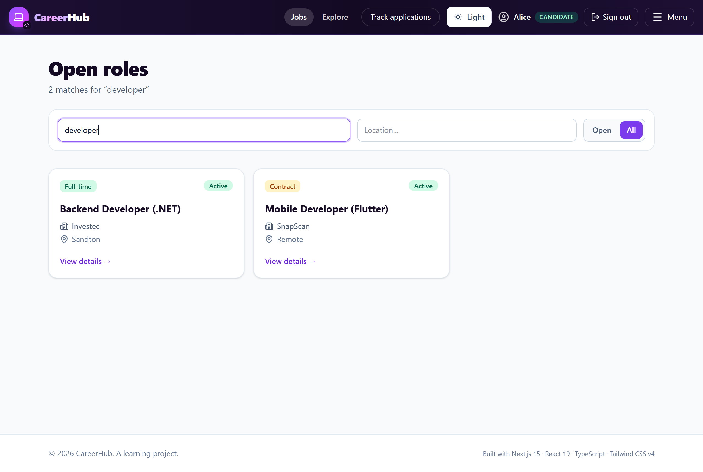
/jobs?q=developer (captured during the screenshot run) — refresh it, share it, or hit Back: the state is in the URL, so it always reproduces this exact view.useState? A filtered search is something you share and
bookmark. In the URL it survives refresh, works with Back/Forward, and — crucially — the
Server Component can read it to filter on the server. useState is component-local,
invisible to the server, and gone on reload.What: a table/grid view toggle and a "show closed jobs" checkbox that survive in-app navigation but reset on refresh — session-level UI state, deliberately not persisted.
export const useDashboardStore = create<DashboardStore>()((set) => ({
view: "table", setView: (view) => set({ view }),
showClosedJobs: true, toggleShowClosedJobs: () => set((s) => ({ showClosedJobs: !s.showClosedJobs })),
})); // NO persist middleware — see why belowpersist? This is a throwaway view preference, not user data, and the
server never needs it. It should follow you across navigation (a module-singleton store does) but a
fresh visit should start clean. If it had to persist, the right move is
persist(…, { name: "careerhub-dashboard-prefs" }) to localStorage; the
trade-off is localStorage (per-device, zero infra) vs. a preferences API (follows the
user across devices, but needs a backend + round-trip).ListingsTable is an async Server Component — it awaits data on the
server, so it cannot call useStore (hooks are client-only). The bridge: the
server fetches, the client presents.
Promise.all fetch jobs + stats, join → pass as props// ListingsTable (server): fetch, then hand plain data to the client view
const [jobs, stats] = await Promise.all([getJobs(), getApplicationStats()]);
return <ListingsView jobs={jobs} counts={counts} />;
// DashboardToolbar (client): ONE selector per value, not destructuring
const view = useDashboardStore((s) => s.view);
const setView = useDashboardStore((s) => s.setView);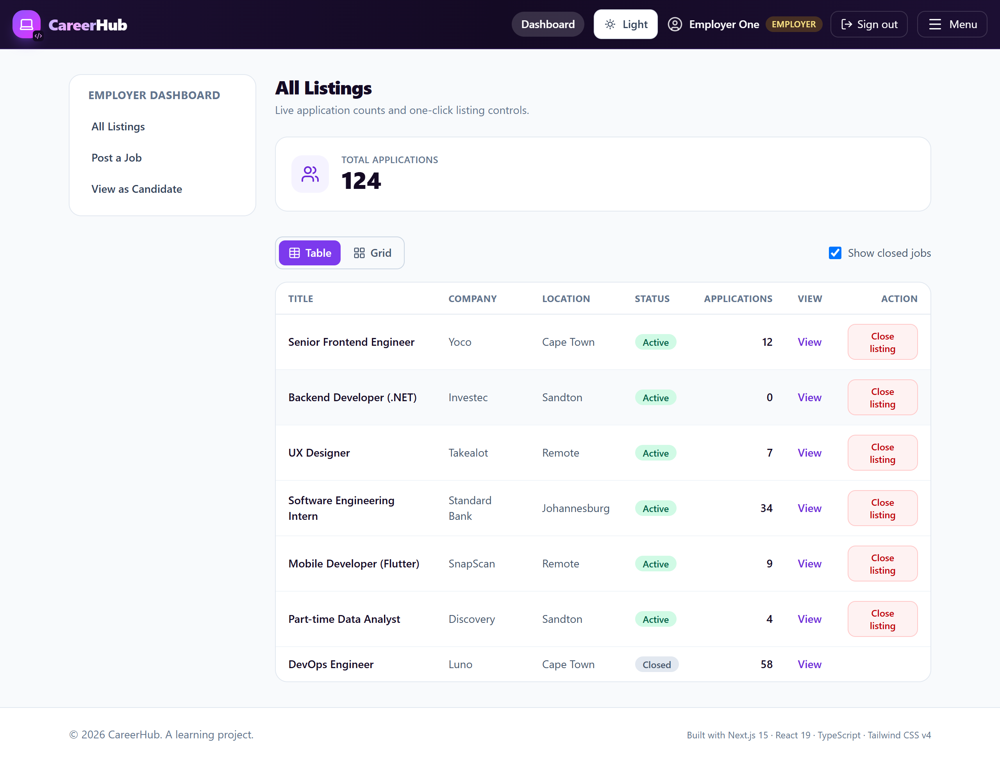
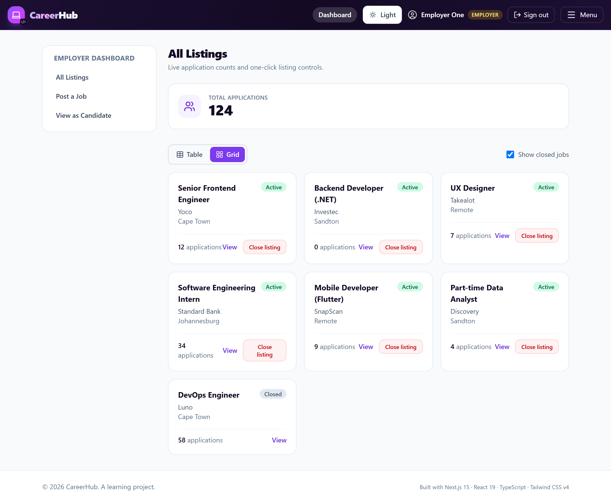
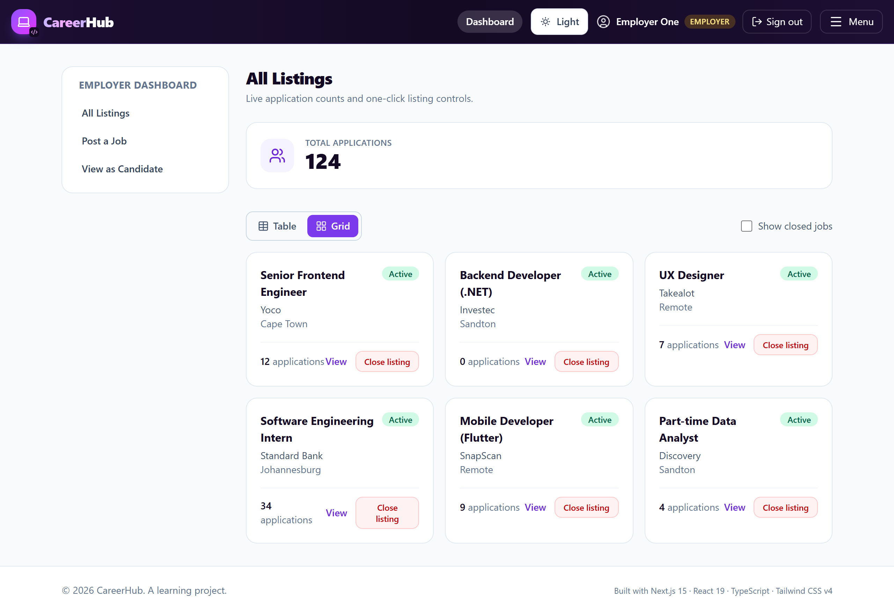
The build failed with Type '{}' is not assignable to type 'Role' in the session
callback. Two root causes, both about TypeScript module augmentation:
| Symptom | Cause | Fix |
|---|---|---|
token.role typed as {} | The augmentation targeted next-auth/jwt, which only re-exports the JWT type from @auth/core/jwt — so it didn't merge. | Also declare module "@auth/core/jwt". |
| Circular type reference | next-auth.d.ts imported Role from @/auth, which depends on the augmented next-auth types. | Moved Role to a standalone src/types/roles.ts. |
After both fixes: npx tsc --noEmit exits 0 and npm run build is clean.
| Part | File(s) | What it does |
|---|---|---|
| 2 · Auth | src/auth.ts, src/types/next-auth.d.ts, src/types/roles.ts, src/app/api/auth/[...nextauth]/route.ts | Credentials provider, JWT, role relay, typed end-to-end. |
| 3 · Login | src/app/login/page.tsx | Server-action sign-in, role-based redirect, error panel. |
| 4 · Middleware | src/middleware.ts | Employer-only dashboard; bounce signed-in off /login. |
| 5 · Role UI | layout.tsx, Navbar.tsx, NavLinks.tsx, actions/auth.ts, jobs/[id]/page.tsx | Session-driven nav + badge + sign-out; apply gate via Promise.all. |
| 6 · Filters | JobFilters.tsx, jobs/(board)/page.tsx | URL state (nuqs), debounce, server-side JS filtering of the cached list. |
| 7 · Zustand | stores/dashboardStore.ts, DashboardToolbar.tsx, ListingsView.tsx, ListingsTable.tsx | Session view preference; server-fetch → client-present bridge; grid view. |
| Providers | src/app/providers.tsx | SessionProvider + NuqsAdapter wired at the root. |
"CareerHub is a Next.js 15 job board with two kinds of user — candidates and employers — and in this iteration I added authentication and got deliberate about state management.
For auth I used Auth.js v5 with a credentials provider and JWT sessions. The key idea is
a three-step relay: authorize returns the user's role, the jwt callback
persists it onto the signed token, and the session callback exposes it — so every
server component, and the middleware, can read session.user.role, fully typed through
module augmentation.
Protection happens at two levels, on purpose. Coarse, whole-route rules live in
middleware — the employer dashboard redirects a candidate before the page ever renders.
Fine, content-level rules live in the page — the job detail is public so employers can read
a posting, but only candidates see the apply form, which I gate by reading the session alongside
the job fetch with Promise.all.
For state, my thesis is right tool, right place. Job filters are shareable, so they live in the URL via nuqs — refresh-proof, bookmarkable, and readable by the server so it can filter. The dashboard's table-versus-grid preference is a per-session UI detail, so it lives in an in-memory Zustand store — no persistence, because it should reset on a fresh visit. And because an async Server Component can't read a client store, I fetch on the server and pass the data as props into a small client view that subscribes to Zustand.
The whole thing builds clean — zero TypeScript and ESLint errors — and I can justify every one of those decisions, which was really the point of the assignment."
/dashboard is redirected without the dashboard ever rendering or
fetching — no wasted work, no flash of protected content. Per-page checks would run after render
begins and would have to be repeated in every dashboard route. The exception is the apply form: that
route is public, so there's nothing to redirect — the decision is "which part renders," which
only the page can make. The principle: redirect-or-not → middleware; what-content-renders → page.token.role)
but it's invisible to the app until the session callback copies it onto
session.user. Without session.user.role = token.role, every
auth()/useSession() reader sees undefined — the nav can't tell
the roles apart and role checks silently fail. In our case there was also a typing twist: the JWT
augmentation has to target @auth/core/jwt, not just next-auth/jwt, or
token.role falls back to the index signature.ListingsTable (server) does the Promise.all fetch and join, then
passes plain jobs and counts as props to ListingsView (a client
component) which reads the Zustand store and decides table vs. grid. DashboardToolbar
writes the same module-singleton store, so toggling it re-renders the view instantly — no refetch, no
prop-drilling through the server.=== and hardcoding users safe?===: you'd hash with bcrypt/argon2 and use a
constant-time compare, behind a real user store. What is production-correct here is the shape:
authorize returns null on any mismatch (never throws, so bad creds become a
clean error, not a 500), the session carries only a minimal identity + role (no secrets, no unused
backendToken), and it's a signed JWT cookie. Swapping the mock authorize body
for a hashed lookup is the only change needed to make the auth layer real.Generated for CareerHub Assignment 2.3. Screenshots are real captures of the running
production build (npm start) driven through the actual Auth.js login. Source brief:
docs/assignment-2.3/Assignment-2.3-Brief.md · Full written decisions:
README.md.